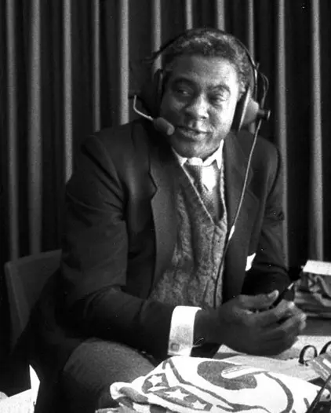

Bill White
Career Highlights & Facts
(Facts are AI-generated and may require verification)
- Played a single major league game as a substitute first baseman.
- Handled 12 defensive chances without an error in a debut appearance.
- Born into slavery before eventually attending a university in the northeast.
Would you like to find out more about Bill White?
Player Biography
William E. White February 28, 2024 / in BioProject - Person Integration Pioneers / by admin This article was written by Bruce Allardice William Edward White, from a Brown University team photo For fans attending the June 21, 1879, game between the Providence Grays and the Cleveland Blues, there didn’t seem anything very special about the day. The only odd note was, perhaps, Providence’s first baseman. Providence’s usual starter, veteran Joe Start , had broken his finger and, as in so many games in this era of tiny rosters, the Grays didn’t have a backup on the roster. Like many clubs that year, Providence brought in a one-day wonder to fill in—in this case first sacker William E. White from nearby Brown University’s college champions. He played credibly that game; batting ninth he went 1-for-4, stole two bases, scored a run, and fielded first base “in fine style,” 1 handling 12 chances without an error. The Grays beat the visiting Blues, 5-3. The box score from the June 21 game is printed below. 2 After the game Providence shifted outfielder Jim O’Rourke to cover first base, and White returned to his college studies. The Grays went on to win the pennant that year. Probably nobody attending was aware that this first baseman, William E. White, was (arguably) the first African-American to play what we call major-league baseball, predating Moses Fleetwood Walker by five years and Jackie Robinson by 68 years. White is certainly the only ex-slave to play in the major leagues. 3 June 21, 1879 box score. (Click image to enlarge.) William Edward White was born in Georgia in October 1860, probably in Upson County. 4 His father, Andrew Jackson White (1815-88), a lifelong bachelor, was one of the wealthiest men in central Georgia. Starting out as a merchant and banker in Macon, Georgia, he grew wealthy and purchased plantations in Upson County. By 1860 he farmed 12,500 acres and owned 60 slaves. In the 1860 census his estate was valued around $35 million in today’s dollars. He also served as superintendent of a local railroad. 5 At the start of the Civil War, White raised a company of infantry for the Confederate army, the “Holloway Greys” of Upson County. The unit mustered in as Company E, 3rd Georgia Infantry Battalion, and elected White its captain. The middle-aged White resigned his army commission in the summer of 1863. 6 Back in Macon, Captain White assumed the presidency of several Georgia railroads. 7 And unlike many of his contemporaries, he seemed not to have lost much of his prewar wealth. On the 1870 census of Bibb County (Macon) his wealth is valued at $195,000. And while the panic of 1873 started a downturn in his fortunes, in 1880 he still owned substantial farmland near Milner. He died there in December 1888. 8 The town of Whitesburg, Georgia was named in his honor. William E. White’s mother was Hannah White (1845-1931), Andrew’s mulatto (half-Black) “servant” (slave). Under the state laws of the time, William was born a slave. The couple had three children. 9 In 1870 Hannah, her children, and her mother were living in Pike County, Georgia, separate from Captain White. But White remembered his children, leaving them a substantial sum in his 1877 will. In the will Captain White named his son William as an alternate executor of his estate. In 1874 Captain White decided to send his two older children (William Edward and Anna Nora) up north to Friends’ School [today Moses Brown School] in Providence, Rhode Island, for their education. Their younger sister, Sarah Adelaide White, followed. Captain White may have wished to quiet wagging tongues in Milner by sending his out-of-wedlock, mulatto children out of state. As a non-Quaker he was obliged to pay $150, a not inconsiderable sum, for nine months’ schooling with room and board for each child. Details of William E. White’s life are few. For example, it is unclear when White learned to play baseball. There were organized baseball teams in Upson County as early as 1872, and he could have been exposed to the game there. Equally possible is that he was exposed to the game in baseball-crazy Providence. He undoubtedly played for a team formed by the students at the Friends’ School. While still at Friends’ School, W.E. White played baseball for Brown University against the Providence Grays on April 12, 1879, so two months later his racial background (if known) would not have been a mystery to the Grays. Batting third for Brown, he went hitless but made 10 putouts without an error. 10 White also played for Brown in the May 21, 1879, game where Brown beat Harvard to win the college baseball championship. Providence vs. Brown newspaper recap on April 12, 1879. (Click image to enlarge.) The account of the June 21 Providence-Cleveland game in the local Providence Evening Press gushed over White’s performance for the Grays: White, of the Brown University nine, substituted at first in place of Start, who was laid off on account of the injury he received in Thursday’s game, played in a manner satisfactory in every sense of the word. It was [a] crucial test, but he came out of it unscathed. No matter how wild the ball was thrown he completed the play in every instance but one, and that was when McGeary gave him a ball that struck the ground before it got to the bag. The Varsity boys lustily cheered their favorite at times, and howled with delight when he got a safe hit in the ninth inning, as they also did for his magnificent steals of second in that and the fifth inning. 11 Another game account praised White for his “brilliant fielding” and explained: As previously announced, White, first baseman of the University Nine, occupied that position for Providence, and it is needless to state that he was as expert and effective as ever, catching some wildly-thrown balls with great ease. He was apparently cool and collected throughout, and will be a valuable substitute for the unfortunate Start. His college friends were present in large numbers and cheered him with frequent Brounonian cries. 12 Even western newspapers chimed in: “[First baseman Joe] Start having obtained leave of absence, White, first baseman of the Brown University nine, was substituted, and played the position with remarkable activity and skill for an amateur.” 13 “White …. Played a superb game throughout.” 14 He had not yet graduated from high school when he played for the Grays in the landmark game against Cleveland. And that may possibly be the reason White never played another major-league game, even though the Providence Journal reported that “ White has been engaged to cover first in the [upcoming Boston] series.” His Friends’ School commencement exercises took place on June 24, the very day that the Grays were to commence a six-game home-and-home set with Boston. White addressed the gathered throng on the topic of “The South,” whose “best elements,” he declared, “are striving to repress lawlessness and correct abuses. The country is one, and the North and South should not forget the fact.” 15 Brown University team, June 16, 1880. William White reclines on the lower left. Following his one big-league game, and after graduating from the Friends’ School, William Edward White left for home to visit his mother and father, forgoing his chance to play big-league ball. Declining pro ball was a choice many college players made, given the small pay and uncertainties of professional baseball at the time. Playing one game in the majors evidently didn’t affect White’s collegiate status as an amateur, presumably because he wasn’t paid, though pitcher Lee Richmond , a Brown teammate, did cause a stir by pitching for Brown after signing a pro contract to pitch for Worcester. 16 Richmond would become best known for pitching the first perfect game in major-league history, in 1880. White played in at least 38 games for Brown from April 1879 through October 1880. Often earning praise for his “brilliant” play, his work was lauded in the student magazine: “excelling” in batting and playing “his usual faultless game on first base.” In time he was moved from first base to right field. How good was White as a player? The 1880 Spalding Guide listed the statistics for non-major league players (the top college and amateur teams) in 1879 and White had the highest batting average (.488) of any player listed. 17 The 1881 Guide ranked White the 18th best college hitter. 18 The guides listed White ahead of several players who ended up in the major leagues. At a minimum, if White had pursued baseball, major-league teams would have given him a try-out. He evidently was easily accepted by his fellow students, many of whom went on to have distinguished careers. One classmate was Charles Evans Hughes, a future governor of New York and chief justice of the United States. While at Brown, White roomed with Friends’ School alumnus Edward Casper Stokes, a future governor of New Jersey. William Edward White listed himself as “white” not only in the Federal censii of 1880, 1900, and 1910 but also in the Rhode Island state census of 1875, when he was enumerated among the many boarders at Friends’ School. As authors Peter Morris and Stefan Fatsis observe: “When he trotted out to first base at Messer Street Grounds in Providence, White may have been the only person who knew that a black man was playing in the big leagues.” 19 After leaving Brown (without graduating), William White worked briefly as a draftsman in Providence, then as a freighting agent in Boston. He moved to Chicago by 1887, if not before, employed as clerk, bookkeeper, and later as a draftsman. 20 For a time, his sister Sarah Adelaide lived with him. 21 On April 20, 1893, he married Harriet “Hattie” Hill (1873-1973) in that city. His wife, the daughter of English-born William Clymo Hill, belonged to the city’s solid, Caucasian middle class. They were fellow congregants at Chicago’s fashionable New England Congregational Church. The couple had three children between 1894 and 1907, all girls, but appears to have separated or divorced in the 1910s. 22 White kept the books for a wood flooring company and for a maker of machines for confectioners, and also worked as a draftsman for US Steel and, from 1910-16, the Pullman Car Company. On the censii of 1900 and 1910 he listed his race as “white” and his birthplace as Rhode Island, undoubtedly trying to disguise his past. Descendants this author has spoken to were unaware of his background or baseball connection, and knew very little about him other than his being “artistic” ( i.e. , his draftsman’s background). On the 1930-50 censii his children listed their father as “white” and born in Rhode Island. He was still working (for a steel company) in 1923, but after that appears to have retired. 23 In early 1937 White slipped on one of Chicago’s icy streets, breaking his arm. Blood poisoning set in, and White died on March 29, 1937. White was buried in River Grove, Illinois, and has a simple headstone in Elmwood Cemetery, Section 14a, lot 287, put there by his son-in-law. (Photo courtesy of Bruce Allardice.) ***** While the modern United States has numerous laws making federal benefits and programs contingent on being of a certain race, modern US law is vague on what exactly qualifies one as “white” or “black” or “African-American.” Since these categorizations are arguable at best, let us try here to summarize what the applicable arguments are. White was born a slave. His ancestry appears to have been one-quarter African-American. With that context, would White have been considered African-American under the law in Rhode Island and elsewhere in 1879? A 1910 book by Gilbert Stephenson attempted to analyze historic American law on this topic. 24 To summarize briefly, federal courts and laws had failed to specifically address the definition of “African-American” (AA) (or “Negro” or “Person of Color,” the other two phrases commonly used). In Georgia, any person who had one “Negro” great-grandfather (1/8th Negro) was considered AA for purposes of the law. Some states had a ¼ standard. Other states simply noted that a person born a slave was by definition AA. Still others had different standards, including a vague “by reputation” standard (if one was considered AA by his neighbors, or held himself out to be AA, he was AA). People who knew the family back in Georgia remembered that William and his sisters “tried to pass” as white, actions confirmed by White’s census affirmations. 25 In the 2020s, one school of thought is that a person can choose/adopt/hold oneself out to be what race they wish. Most government forms that ask people about their race accept that person’s racial self-identification as proof of race, or at least use that self-identification as a rebuttable presumption of race–akin to the “by reputation” standard mentioned in Stephenson’s book. By that standard (adopted by John Husman in his article on the 1879 game) White, by holding himself out as “white,” should not be classed as African-American. Brown University historian Rick Harris notes that the 2010 federal census, a modern legal source, suggests that a person check the box for “African-American” if that person has an ancestry or heritage from black Africa—going back to the historic understanding that race is primarily a matter of biology. Perhaps the last word on this contentious question belongs to Major League Baseball historian John Thorn: “For me, there is no getting around the fact that White was born a slave, a credential for Blackness that is impeccable and, among MLB players, unique.” 26 Acknowledgments Major League Baseball historian John Thorn has been an especial help in this research. This biography was reviewed by Bill Nowlin and Rick Zucker and fact-checked by Bill Johnson. Sources Allardice, Bruce. “First Black MLB Ballplayer Buried in River Grove, Illinois,” SABR Emil Rothe Chicago Chapter Newsletter , May-June 2023. Brunonian , vols 12-14. Chicago, Austin, Providence, and Boston City Directories. Directory of the Congregation of the New England Church, Chicago, December 1, 1891 (Chicago, 1891). Fain, Traves. “Breaking Baseball’s Color Barrier,” Macon Telegraph , February 8, 2004. Fatsis, Stefan. “The First Black Player in Major League History: Was it William E. White?” April 22, 2013, Slate.com. Online at https://www.slate.com/articles/sports/sports_nut/2013/04/william_edward_white_was_a_little_known_19th_century_man_the_first_black.html on February 15, 2024. Fatsis, Stefan. “Mystery of Baseball: Was William White Game’s First Black?” Wall Street Journal , January 30, 2004. Geiger, Walter. “Did Milner Man Break Baseball’s Color Barrier?” Barnesville Herald-Gazette , February 9, 2004. Harrington, C. A., Record of the class of eighty-three, Brown University (Providence: Snow & Farnham, 1889). Harris, Rick. Brown University Baseball (Charleston, South Carolina: History Press, 2012). Husman, John, “June 21, 1879: The Cameo of William Edward White,” Inventing Baseball: The 100 Greatest Games of the 19th Century (Phoenix: SABR, 2013). Accessed online on February 15, 2024. Malinowski, Zachary, “Who was the first black man to play in the major leagues?” Providence Journal , February 15, 2004. Moses, Lauren. “Why is the first African American major leaguer overlooked?” (Bally Sports, February 1, 2022), online at https: Rhode Island State Census, 1875, Providence, Ward 1, ED 4, p. 79. United States Census: 1860, Upson County, GA, p. 619; 1870, Pike County, GA, p. 234; 1880, Providence, RI, ED 17, p. 34; 1900 Chicago, Ward 34, ED 1092, p. 13; 1910 Chicago, Ward 13, ED 672, p. 10A. White, A. J., will, Pike County, Record of Wills vol. C-D, pp. 148-152. White, T. J. “William Edward White,” online at https://www.academia.edu/6212927/William_Edward_White_1860_1937_First_African_American_Major_League_Baseball_Player Notes 1 “Providence v. Cleveland,” New York Clipper , June 28, 1879, 107. 2 “Base Ball,” Providence Evening Bulletin , June 23, 1879: 1 . 3 White was also the first major leaguer born in Georgia. 4 He’s correctly listed as coming from Milner on Brown University records. However, it is likely that he was born on one of his father’s Upson County plantations, close to Milner but in a different county. Milner is now located in Lamar County, created from Pike County in 1920. 5 1860 US Census, GA, Upson County p. 619; 1860 US Census, Slave Schedule, GA, Upson County p. 30. 6 Odd fact: William E. White was eligible for membership in the Sons of Confederate Veterans organization. How many early ballplayers could claim that? 7 For more on his extensive railroad career, see David E. Paterson, Frontier Link with the World: The Upson County Railroad (Macon, Georgia: Mercer University Press, 1998). 8 Much of the information on Captain White is from his obituary, “Death of Capt. White,” Macon Weekly Telegraph , December 25, 1888, 4. See also the 1860, 1870, and 1880 federal censii, Georgia tax records, and various articles in Macon newspapers. 9 Their births are NOT mentioned in a White family Bible. See Jeannette H. Austin, Georgia Bible Records (Westminster, Maryland: Genealogical Publishing Co., 1997), 123. 10 “Providence vs. Brown University,” New York Clipper , April 19, 1879: 27. 11 “Base Ball,” Providence Evening Press , June 23, 1879: 1. 12 “Base and Plate. Providence, 5; Cleveland, 3,” Providence Evening Bulletin , June 23, 1879: 5. 13 “Providence vs. Cleveland,” Chicago Tribune , June 22, 1879: 7. 14 “Providence 5—Cleveland 3,” Cincinnati Commercial Tribune , June 22, 1879: 7. 15 “The Friends School,” Providence Evening Bulletin , June 24, 1879: 4. Much of this paragraph is adapted from John Thorn’s Our Game blog on April 10, 2023, online at https://medium.com/our-game/pioneers-william-edward-white-f87a9ad1ca8d . 16 See “Baseball Notes,” New York Clipper , June 14, 1879: 93; “Baseball. Collegiate Amateurs vs. Professionals,” New York Clipper , December 20, 1879: 306; “Baseball Notes,” New York Clipper , January 31, 1880: 357. 17 Spalding’s Official Base Ball Guide, 1880 (Chicago: A. G. Spalding & Bros, 1880), 28. It listed statistics for 232 players. The guide only listed batting and fielding averages. White played nine games and had a .965 fielding average. 18 Spalding’s Official Base Ball Guide, 1881 (Chicago: A. G. Spalding & Bros, 1881), 32. He’s listed as having played eight college games. However, Brown played numerous other games against top amateur and professional teams. 19 Peter Morris and Stefan Fatsis, “Baseball’s Secret Pioneer: William Edward White, the first black player in major-league history,” Slate.com February 4, 2014, online at https: . 20 Since so little has heretofore been proven as to White’s post-1879 life, this author has traced him via available city directories and other documents: 1880 Providence—student living at a boarding house at 439 Benefit St. 1881 Providence—boards at 29 Benevolent St. 1882 Providence—residence 40 Broadway; works as a draftsman at 21 Butler Exchange 1883 Boston—worked in the freight department of the Old Colony Railroad 1883-85—clerk in Boston 1887 Chicago—clerk, 48 Randolph (for E. B. Moore Flooring Co.), home Maywood, IL 1888-90 Chicago—bookkeeper, 48 Randolph, home 309 N. Pine, Austin, IL 1891 Chicago—clerk, 48 Randolph, home 593 LaSalle 1892 Chicago—clerk, 48 Randolph 1893 Chicago—clerk, home 167 Noble 1894 Chicago—bookkeeper, 163 Randolph, home 167 Noble 1895 Chicago—clerk, 163 Randolph, home 5759 Armour 1896 Chicago—clerk, 334 Dearborn, home 5419 Dearborn 1898 Chicago—clerk, 215 S. Clinton (for Hicks Mfg. Co.), home 6341 Langley 1899 Chicago—clerk, 35th and Iron, home 6339 Langley 1900 Chicago and 1900 census—bookkeeper, 6613 Langley 1904-09 Chicago—draftsman, home 1095 W. Polk. Worked for US Steel in Gary, IN. 1910-11 Chicago, 1910 employment card, and 1910 census—draftsman, Pullman Co., home 2452 W. Polk 1913 Chicago—draftsman, 213 W. Washington, home 2234 Fremont 1914-16 Chicago and employment card—draftsman, Pullman Company, home 7100 Cottage Grove 1917 Chicago—1301 S. California (per the Brown Alumni Monthly , May 1917) 1923 Chicago—draftsman, Wm. A. Field Co., home 650 Madison 1930 Chicago—draftsman, home 600 W. Madison 1937—home 615 North Wells, Chicago, per his death certificate, an address that matches a record of White at the Friends School. Chicago’s Lakeside City Directories stopped publishing in the 1920s. 21 They lived at 309 N. Pine in the Chicago suburb of Austin. She worked as a stenographer at the time. 22 The children were Gladys Hattie (1894-1926, md. Albert Bierma), Vera (1897-1976, md. Roy Patrick), and Jennie Bernice (1907-1992). 23 Some sources try to link our White to a William White in the 1920 census of Harvey, Illinois, a Chicago suburb. While this White’s age and Georgia birth fit, the author’s research suggests the Harvey man is William H. White, who died January 9, 1937. 24 Gilbert Stephenson, Race Distinctions in American Law (New York City and London: D. Appleton and Co., 1910), 12-20. 25 T.J. White, “William Edward White,” online at https://www.academia.edu/6212927/William_Edward_White_1860_1937_First_African_American_Major_League_Baseball_Player 26 John Thorn, “Pioneers: William Edward White,” Our Game Blog, April 10, 2023, online at https://medium.com/our-game/pioneers-william-edward-white-f87a9ad1ca8d Full Name William Edward White Born October , 1860 at Milner, GA (USA) Died March 29, 1937 at Chicago, IL (USA) Stats Baseball Reference Retrosheet If you can help us improve this player’s biography, contact us . Tags Integration Pioneers · Share this entry Share on Facebook Share on X Share on LinkedIn Share on Reddit Share by Mail
Career Totals
| WAR | AB | H | HR | BA | R | RBI | SB | OBP | SLG | OPS | OPS+ |
|---|---|---|---|---|---|---|---|---|---|---|---|
| 38.6 | 5972 | 1706 | 202 | .286 | 843 | 870 | 103 | .351 | .455 | .806 | 117 |
Statistics via Baseball-Reference.com
The Original Clue